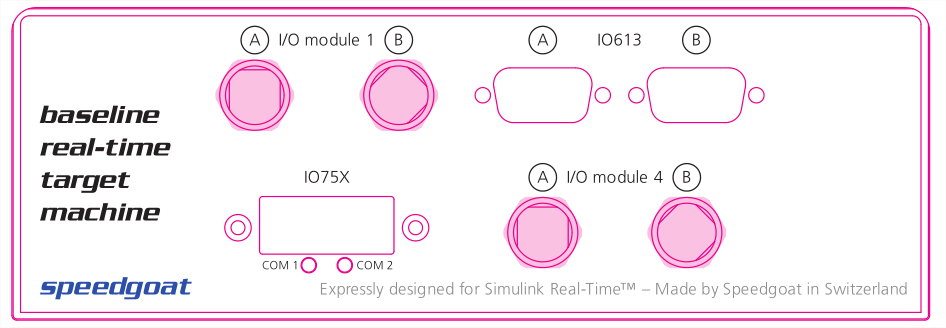

IO613 Pin Mapping
IO613 Pin Mapping — Reference information about the I/O module connector
Channel Location
The following figure shows the outlines of an example Baseline target machine with the IO613 I/O module located in the top-right corner.

![[Note]](images/note.png) | Note |
|---|---|
Note that the two DB9 connectors are labeled A & B.
|
Connector Pin Mapping
The following figure shows the pin numbering of a DB9 connector when looking from the front (outside of the target machine).

The pin mapping of the two connectors is identical and is listed in the following table:
| Pin | Signal | Condition |
|---|---|---|
| 1 | - | |
| 2 | CAN Low | |
| 3 | GND | |
| 4 | - | |
| 5 | - | |
| 6 | - | |
| 7 | CAN High | |
| 8 | - | |
| 9 | - |
For proper operation, a CAN topology requires electrical termination in the form of resistors.
The IO613 I/O module does not include termination resistors. The full resistor comes with the CAN module loopback cable provided by Speedgoat.